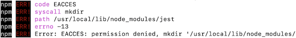

Chapter 1 Impostazione iniziale
Questo corso coprirà e userà una vasta gamma di strumenti e tecniche comuni al moderno web development, inclusi diversi programmi software usati per scrivere, gestire ed eseguire il codice della tua web application. Questo capitolo spiega come installare e usare parte del software di cui avrai bisogno per costruire queste applicazioni.
Nota: i computer dei lab dell’iSchool dovrebbero già avere tutto il software necessario installato e pronto all’uso.
In sintesi, dovrai installare e configurare il seguente software sulla tua macchina (maggiori dettagli sotto su ciascun elemento). Sentiti libero di usare software alternativi, ma questi sono i programmi consigliati per il corso (cioè quelli per cui forniremo supporto):
- Un browser moderno come Google Chrome
- Visual Studio Code come code editor per scrivere codice
- Node.js, un motore JavaScript
npm, un JavaScript package manager incluso con Node.js
- Un terminale Bash (ad es. Git Bash per Windows; Terminal e’ gia’ installato su Mac).
gitcome sistema di version control (per utenti Windows; gia’ installato su Mac)
1.1 Web Browser
La prima cosa che ti serve e’ un web browser per visualizzare le pagine web che crei. Ti consiglio di installare e usare Chrome, che include un set efficace di developer tools integrati, particolarmente utili in questo corso. Consiglio Chrome soprattutto per ragioni storiche (e perche’ e’ il browser usato dall’autore — e dovevo sceglierne uno!).
Puoi aprire gli strumenti di sviluppo di Chrome scegliendo View > Developer > Developer Tools dal menu principale di Chrome (cmd + option + i su Mac, ctrl + shift + i su Windows). Vorrai praticamente sempre tenere questi strumenti aperti quando fai web development, soprattutto quando aggiungi interattivita’ tramite JavaScript.
Altri browser moderni come Firefox o Microsoft Edge funzioneranno perfettamente in questo corso e includono le loro versioni dei necessari developer tools. Nota che browser diversi possono e renderanno il codice in modi differenti, cosa che verra’ discussa ampiamente durante il corso.
Ti sconsiglio fortemente di usare Safari, perche’ presenta una serie di problemi di interfaccia e di rendering che rendono difficile lo sviluppo in questo corso.
1.2 Code Editor
Per scrivere web code, serve un posto dove farlo. Esistono vari code editor e IDE (Integrated Development Environments) specializzati nel web development, che offrono syntax highlighting, code completion e altre funzionalita’ utili. Ci sono molti editor diversi, con interfacce e caratteristiche leggermente diverse; ti serve solo scaricare e usare uno dei programmi seguenti. Consiglio fortemente Visual Studio Code come scelta predefinita, ma sentiti libero di provarne altri per trovare quello che preferisci (e poi evangelizzarlo ai tuoi amici!).
Visual Studio Code
Visual Studio Code (o VS Code; da non confondere con Visual Studio) e’ un editor gratuito e open source sviluppato da Microsoft — si’, davvero. Si concentra sul web programming e su JavaScript, ma supporta anche molti altri linguaggi e offre numerose community-built extensions per aggiungere ancora piu’ funzionalita’. E’ uno degli editor piu’ comuni per la programmazione e in particolare per il web development. VS Code e’ in realta’ una web application autonoma, quindi e’ scritto nello stesso HTML, CSS e JavaScript che imparerai in questo corso.
Per installare VS Code, segui il link sopra e fai click sul pulsante “Download” per scaricare l’installer (ad es. .dmg o .exe), poi fai doppio click per installare l’applicazione.
VS Code e’ altamente personalizzabile e ricco di funzionalita’. Per maggiori informazioni su come usare VS Code, vedi la documentazione, che include anche video se ti sono utili. La documentazione per programmare in HTML, CSS e soprattutto JavaScript contiene molti suggerimenti e trucchi.
Puoi aprire un file in VS Code usando il comando File > Open.... Poiche’ il web development spesso richiede di lavorare con molti file contemporaneamente, e’ spesso piu’ efficace aprire un’intera cartella con File > Open Folder.... Questo elenchera’ tutti i file della cartella in una sidebar, e potrai fare doppio click su ciascun file per aprirlo in una scheda dedicata. Puoi anche gestire i file dalla sidebar: spostarli, creare cartelle o rinominarli tramite il menu contestuale (click destro).
Nota che quando i file sono aperti in schede, a destra della scheda appare una “x” per chiuderla. Ma se il file e’ stato modificato, quella “x” diventera’ un cerchietto pieno, indicando che ci sono modifiche non salvate. Fai attenzione: e’ un buon modo per accorgerti se hai dimenticato di salvare il tuo lavoro (ed e’ il motivo per cui le modifiche non compaiono!).
Un altro trucco per usare VS Code in modo efficace e’ familiarizzare con la Command Palette. Se premi cmd + shift + p, VS Code aprira’ una piccola finestra di dialogo in cui puoi cercare cio’ che vuoi che l’editor faccia. Per esempio, se digiti markdown ottieni l’elenco dei comandi relativi ai file Markdown (inclusa la possibilita’ di aprire un’anteprima). Anche l’opzione Format Code e’ particolarmente utile per correggere problemi di spaziatura nel codice.
Anche se VS Code e’ relativamente poco invasivo rispetto ad altri IDE, fai molta attenzione nell’usare l’auto-complete o le funzionalita’ basate su AI. Spesso l’editor cerca di aiutarti o “correggere” il codice aggiungendo soluzioni sbagliate, che poi causano altri problemi imprevisti. Assicurati che il codice inserito nei tuoi file sia composto da righe che capisci e che sai fare debug.
1.2.1 Altri editor
Anche se suggeriamo VS Code per questo corso, altri editor sono accettabili e potrebbero interessarti. Nota che questi
Sublime Text e’ un vecchio ma popolare text editor con ottimi default e varie estensioni disponibili (anche se dovrai gestire e installare le estensioni per ottenere le funzionalita’ offerte da altri editor out of the box). Il software puo’ essere usato gratis, ma ogni 20 salvataggi o giu’ di li’ ti chiede di acquistare la versione completa. E’ un’ottima opzione per scrivere file di testo semplice.
WebStorm e’ un IDE completo di JetBrains (gli autori di IntelliJ per Java). Puo’ offrire funzionalita’ utili, ma e’ anche probabile che produca molto “cruft” o guidi il tuo coding in modi particolari. Ti consiglio di usarlo solo dopo aver padroneggiato le basi (ad esempio completando questo corso), cosi’ da capire le scelte che sta facendo.
Atom era un text editor creato dal team di GitHub, ma e’ stato ritirato. Era molto simile a VS Code per funzionalita’, ma con un’interfaccia e una community un po’ diverse. Aveva una command-palette simile a quella di VS Code. Il documento che stai leggendo e’ stato scritto in Atom, ed e’ per questo che resta in questa lista. Il progetto Pulsar e’ un fork dell’editor Atom.
1.3 Bash (Command Line)
Molti degli strumenti software usati nel web development professionale funzionano sulla command line: un’interfaccia testuale per controllare il computer. Anche se la command line e’ piu’ difficile da imparare, e’ particolarmente efficace per il web development. L’automazione da command line e’ potente ed efficiente abbastanza da gestire le decine di task ripetuti su centinaia di file sorgente (distribuiti su piu’ computer) comuni nel web programming. Dovrai essere a tuo agio con la command line per utilizzare il software di questo corso.
Esistono diversi command shell (interfacce da command line), ma in questo corso usiamo la shell Bash, che offre un set di comandi comune alle macchine Mac e Linux. Cio’ che devi installare dipende dal tuo sistema operativo:
Su Mac dovrai usare l’app integrata Terminal. Puoi aprirla cercando tramite Spotlight (premi insieme Cmd (
⌘) e la barra spaziatrice, digita “terminal”, poi seleziona l’app), oppure trovarla nella cartella Applicazioni/Utility.A partire da macOS Catalina, i Mac usano zsh come command shell predefinita con Terminal. Funziona quasi come Bash (supporta in generale gli stessi comandi). E’ anche possibile passare da una shell all’altra se necessario.
Su Windows puoi usare la shell Git Bash, che dovresti installare insieme a
git(vedi sotto). Apri questo programma per usare la command shell.Nota che Windows include una sua command shell, chiamata Command Prompt (precedentemente DOS Prompt), ma ha un set di comandi e funzionalita’ diverso. Powershell e’ una versione piu’ potente del Command Prompt se vuoi davvero entrare nel Windows Management Framework. Ma Bash e’ piu’ comune nella programmazione open source come quella che faremo qui, quindi ci concentreremo su quel set di comandi.
Alcuni software usati in questo corso non funzionano con Command Prompt o Powershell; dovrai avere e usare una shell di tipo Bash.
Questo corso si aspetta che tu sia gia’ familiare con l’uso base della command line. Per ripasso, vedi ad esempio The Command Line nel corso INFO 201.
1.4 Node e npm
Node.js (spesso solo “Node”) e’ un runtime environment da command line per il linguaggio di programmazione JavaScript — cioe’ un programma usato per interpretare ed eseguire istruzioni scritte in JavaScript. Anche se lo sviluppo client-side di solito implica l’esecuzione di JavaScript nel browser (vedi Capitolo: JavaScript), Node fornisce una piattaforma per installare ed eseguire una grande varieta’ di programmi “di supporto” che sono spesso usati nel web development.
Il modo piu’ semplice per installare Node e’ usare l’installer di Nodejs.org. Ti consiglio di prendere l’ultima versione per questo corso. Scarica l’installer ed eseguilo per configurare Node sulla tua macchina.
Se vuoi un controllo maggiore sulla tua macchina e sulle versioni di Node, puoi alternativamente installare Node usando nvm, il Node Version Manager. E’ un programma da command line che gestisce l’installazione di Node e rende facile aggiornare o modificare la tua installazione. Vedi le istruzioni di installazione per i dettagli.
Puoi verificare che Node sia installato e funzioni aprendo la tua command shell ed eseguendo
node --versionAssicurati di avere una versione sufficientemente recente. Al momento della stesura, dovresti avere Node v18 o successivo.
Installare Node installa anche un ulteriore programma da command line chiamato npm. npm e’ un package manager, cioe’ un programma usato per “gestire” altri programmi — pensa a un “app store” da command line per strumenti e librerie da sviluppatori. npm e’ il modo piu’ comune per installare ed eseguire un gran numero di tool usati nel web development professionale. A settembre 2022, la “registry” di npm contava piu’ di 2,1 milioni di package diversi.
Avrai bisogno di almeno v5.6 di npm. Installare l’ultima versione di Node dovrebbe fornirti anche l’ultima versione di npm, ma puoi anche aggiornare npm con il comando npm install npm@latest -g. Vedi sotto per una spiegazione di questo comando.
Installare software con npm
Puoi usare npm per scaricare e installare programmi da command line per nome:
# syntax to globally install package with npm
npm install -g PACKAGE-NAMEPer esempio, puoi installare l’applicazione di testing Jest (un programma per eseguire test automatizzati) usata in questo corso con:
# globally install the Jest package
npm install -g jestE’ importante notare l’opzione -g. Questo dice a npm di installare il package globalmente, rendendolo disponibile su tutto il computer, invece che solo in una specifica cartella. Poiche’ vuoi poter usare un programma da command line come Jest da qualsiasi cartella (ad es. per qualsiasi progetto), le command line utilities vengono sempre installate globalmente con l’opzione -g.
Installare un’applicazione globalmente spesso richiede permessi di amministratore. Se provi a installare qualcosa senza permessi admin, riceverai un errore permission denied:

Per installare programmi globalmente, dovrai usare il comando sudo (superuser do) per eseguire l’installazione come amministratore. Lo fai mettendo sudo davanti al comando che vuoi eseguire, per esempio:
# as an administrator, globally install the Jest package
sudo npm install -g jestTi verra’ chiesta la password del computer: inseriscila (anche se non vedrai i caratteri digitati).
Nota che dovresti usare sudo solo quando e’ strettamente necessario (ad esempio quando vedi questo errore); non eseguire ogni comando come amministratore!
Dopo che un’applicazione e’ stata installata tramite npm, puoi eseguire quel programma da command line digitandone il nome seguito dagli argomenti. Per esempio, puoi far stampare a Jest la sua versione:
# get the version of the installed Jest application
jest --versionL’ultima versione di npm include anche un programma aggiuntivo chiamato npx. Questa applicazione ti permette di “scaricare ed eseguire” un’applicazione senza installarla separatamente. Per esempio, potresti scaricare ed eseguire Jest per vederne la versione; nota che non devi mai chiamare npm install per jest quando usi npx:
# download and run the Jest application without installing it separately
npx jest --versionGestire package locali
E’ anche possibile installare package localmente omettendo l’argomento -g. Per esempio:
npm install lodashQuesto comando scarichera’ la libreria lodash (un set di funzioni JavaScript utili). Questo package verra’ messo in una nuova cartella nella directory del progetto corrente chiamata node_modules/, e potra’ essere importato e usato nel codice della directory corrente. (Si chiama installazione locale perche’ il package e’ disponibile solo per il progetto “locale”). Dovrai installare i package locali una volta per ogni progetto.
Poiche’ i package Node possono essere molto grandi e i progetti possono averne molti, assicurati di non fare commit della cartella node_modules/ nel version control. Assicurati che la cartella sia elencata nel file .gitignore.
Quando i progetti diventano grandi, e’ comune che accumulino molte dependencies: package che devono essere installati affinche’ il programma funzioni. In altre parole, serve un certo set di package nella cartella node_modules/ del progetto. npm e’ in grado di tenere traccia di queste dipendenze registrandole in un file specializzato chiamato package.json che si trova nella directory del progetto. Un file package.json e’ un file di testo contenente un elenco in formato JSON con informazioni sul progetto. Per esempio:
{
"name": "example",
"version": "1.0.0",
"private": true,
"description": "A project with an example package.json",
"main": "index.js",
"scripts": {
"test": "jest"
},
"author": "Joel Ross",
"license": "ISC",
"dependencies": {
"lodash": "^4.17.4",
"moment": "^2.18.1"
},
"devDependencies": {
"html-validator": "^2.2.2"
}
}(Puoi creare uno di questi file usando il comando npm init nella directory del progetto corrente, poi seguendo le istruzioni per compilare i campi).
Nota che ci sono due package elencati sotto "dependencies": lodash e moment (il ^4.17.4 indica quale versione di lodash — almeno la 4.17.4). Puoi usare npm per installare automaticamente tutti i package elencati sotto "dependencies" (e anche sotto "devDependencies") nel file package.json con il comando:
npm installUsare npm install senza argomenti significa “installa tutti i requisiti registrati per questo progetto”. E’ un ottimo primo passo ogni volta che scarichi un progetto o fai checkout di un repository da GitHub.
Puoi eseguire npm install tutte le volte che vuoi: se il package e’ gia’ stato installato (nella cartella node_modules/), non verra’ scaricato di nuovo. Solo i package “mancanti” — ad esempio quelli aggiunti di recente al file package.json — verranno installati.
Poiche’ tutti i package locali sono salvati nella cartella node_modules/, quella cartella e’ un obiettivo comune quando si fa troubleshooting dei problemi di installazione dei package. Per esempio, se un package non sembra importarsi correttamente, un passo comune e’ eliminare la cartella node_modules e poi riprovare.
Nota che, mentre il file package.json elenca le dependencies desiderate per un progetto, il file package-lock.json elenca le versioni specifiche delle dependencies (e le dependencies delle dependencies!) che sono state effettivamente installate. Questo serve per assicurare che, se un package riceve un aggiornamento minore (ad es. da 4.17.18 a 4.17.19) con un bug, tu non installi accidentalmente quella versione e rompa il progetto. Il file package-lock.json viene generato automaticamente ogni volta che installi o reinstalli un package locale. Le modifiche a questo file sono un buon modo per verificare se hai installato per errore una versione diversa di una dependency.
Quando installi package specifici (ad es. con npm install package-name), npm li aggiunge automaticamente alla lista delle dependencies in package.json. Puoi anche rendere esplicita questa registrazione con l’opzione --save:
# explicitly save dependency in package.json
npm install --save lodash